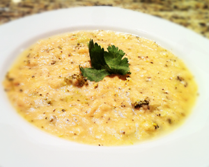
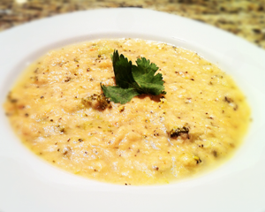

Healthy, flavourful soup direct to your home; quality that gets your family raving.
Serious Soups is a local company that creates 26 types of soups and sells them commercially in the lower mainland. Until recently these soups have only been available to commercial vendors in the Vancouver area. But now, you can have restaurant quality soup at your kitchen table. Serious Soups at Home has branched off to deliver soups to people at home in the Vancouver area. Our soups are made from fresh, natural ingredients that are low in sodium, have no MSG and no artificial preservatives.